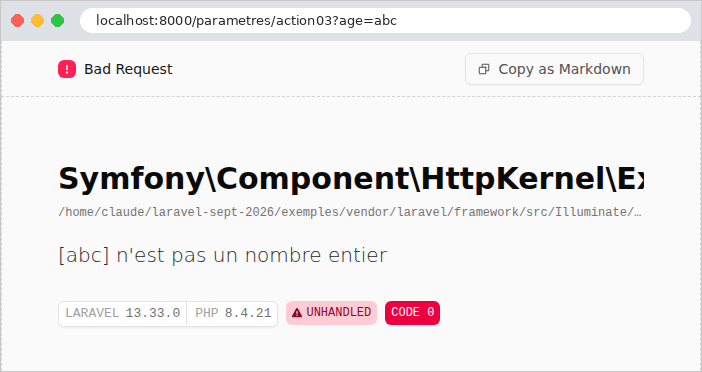
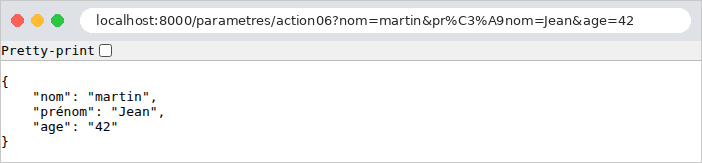

3. Le modèle d'une action
Une action a besoin des informations envoyées par le navigateur : les paramètres de l'URL ([?nom=martin&age=42]), les champs d'un formulaire, le corps JSON d'une requête, parfois un entête HTTP. Le cours d'origine appelle modèle de l'action l'ensemble de ces informations. Ce chapitre montre comment une action [Laravel] les obtient, les convertit dans le bon type et les valide. Ce travail s'appelle la liaison de données (*data binding*).
[Laravel] donne accès aux informations de la requête par l'objet [Request] (exemple 05), sous forme de chaînes de caractères, avec quelques méthodes de conversion. Pour vérifier les données, il possède un système de validation complet : on décrit les données attendues par des règles (« obligatoire », « un entier entre 0 et 150 »...), et [Laravel] vérifie que les données les respectent. Nous lirons d'abord les paramètres à la main (exemple 07), puis nous confierons leur vérification à ces règles (exemples 08 à 12). Au chapitre suivant, le même système validera les formulaires HTML.
Attention au vocabulaire : le mot « modèle » désignera surtout, au chapitre suivant, les données qu'une action transmet à sa vue. Le modèle d'une action, au sens de ce chapitre, est ce qu'elle reçoit. [Laravel] emploie aussi le mot *model* pour les classes qui représentent les tables d'une base de données (chapitre 9) : c'est un troisième sens.
Les exemples 07 à 12 se lancent comme ceux du chapitre précédent : un terminal ouvert sur le dossier de l'exemple, [php artisan serve] ; [Ctrl-C] arrête le serveur. Leurs fichiers [bootstrap/app.php] se ressemblent tous : ils ajoutent le middleware [JsonLisible] de l'exemple 03, pour un JSON lisible. Nous ne les commenterons que lorsqu'ils apportent quelque chose de nouveau.
3.1. Exemple 07 : les paramètres de l'URL
Les paramètres de l'URL sont la partie qui suit le [?] : [?nom=martin&age=42]. Cette partie s'appelle la chaîne de requête (*query string*). Chaque paramètre est un couple [nom=valeur] ; les couples sont séparés par des [&]. Le contrôleur [ParametresController] :
- ligne 14 : la méthode [query] de la requête rend la valeur d'un paramètre de l'URL, déjà décodée, ou [null] s'il est absent : elle ne provoque jamais d'erreur ;
- ligne 15 : l'action affiche la valeur, et son type : la fonction [get_debug_type] rend le nom du type d'une valeur. Une valeur tirée de l'URL est toujours une chaîne ([string]). L'opérateur [.] concatène la chaîne interpolée et le type ;
- ligne 22 : la méthode [integer] lit le paramètre et le convertit en entier. Si la conversion échoue ([abc]), ou si le paramètre est absent, elle rend 0 : l'action ne peut pas distinguer ces cas d'un âge de 0 saisi pour de bon, et l'erreur de saisie passe inaperçue. Il existe de même [float], [boolean] ([1], [true], [on], [yes] sont vrais), [string], [date] (exemple 12), [enum] ;
- lignes 30-40 : un paramètre obligatoire, et une conversion faite à la main, qui distingue les deux erreurs possibles. [abort(400, message)] arrête l'action par une réponse 400 (*Bad Request*, la requête est incorrecte), accompagnée du message (cf. exemple 03). La fonction [filter_var] de [PHP], avec le filtre [FILTER_VALIDATE_INT], rend l'entier contenu dans la chaîne, ou [false] si la chaîne n'est pas un entier ;
- ligne 46 : le second paramètre de [integer] est une valeur par défaut, utilisée si le paramètre manque. C'est le cas typique du numéro de page d'une liste ;
- ligne 54 : rien n'oblige à nommer la variable [PHP] comme le paramètre de l'URL. Les moteurs de recherche utilisent souvent un paramètre court, [q] (*query*) ;
- ligne 61 : sans paramètre, [query] rend tous les paramètres de l'URL, dans un tableau associatif, que l'action rend : [Laravel] le transforme en JSON (cf. exemple 03).
La table de routage déclare les six routes par une boucle :
- ligne 8 : la boucle [foreach] parcourt un tableau : à chaque tour, la variable [$action] prend la valeur de l'élément suivant. Chaque route porte le nom de son action : [Route::get('action01', 'action01')]... La table de routage est un fichier [PHP] comme un autre : on peut y écrire tout le code que l'on veut.
Testons chaque action avec [curl]. Un paramètre présent, puis absent :
Les guillemets autour de l'URL sont nécessaires dans un terminal : sans eux, le shell interpréterait le [&] (qui lance une commande en arrière-plan sous [Linux]) et le [?]. La valeur [null], insérée dans une chaîne, devient une chaîne vide. Une valeur contenant des espaces ou des caractères spéciaux doit être encodée dans l'URL : l'espace devient [%20], le [&] devient [%26] (sinon, il séparerait deux paramètres). Le navigateur le fait tout seul ; avec [curl], il faut l'écrire. [PHP] décode la valeur avant que l'action ne la lise :
La conversion par [integer], réussie, ratée, puis sans paramètre :
Le paramètre obligatoire de l'action 03, absent puis invalide. Nous demandons une réponse JSON (entête [Accept], cf. exemple 03), qui contient le message de [abort] :
Dans un navigateur, en mode debug, une réponse 400 affiche la page d'erreur de [Laravel], avec le message :

La valeur par défaut, et le paramètre renommé :
Enfin, tous les paramètres d'un coup. Le paramètre [nom] apparaît deux fois :
Le paramètre [nom] ne garde que sa dernière valeur : c'est une règle de [PHP], que nous retrouverons à l'exemple 10. L'âge est resté une chaîne (["42"], entre guillemets dans le JSON) : aucune conversion n'a été demandée. Dans un navigateur (ici [Chromium]), le JSON est présenté tel que le serveur l'a mis en forme ; la case « Pretty-print » le présenterait indenté s'il ne l'était pas. La barre d'adresse montre au passage l'encodage des caractères accentués dans l'URL ([é] devient [%C3%A9], ses deux octets en [UTF-8]) :

Ce premier exemple montre les limites de l'approche manuelle : pour chaque paramètre, il faut écrire la lecture, la conversion, le traitement de l'absence et de l'erreur. Avec dix paramètres, le code de l'action serait noyé sous ces vérifications. Il vaut mieux décrire ce qu'on attend, et laisser le framework le vérifier. C'est l'objet de l'exemple suivant.
3.2. Exemple 08 : un modèle d'action décrit par une classe
[Laravel] vérifie les données d'une requête grâce à des règles de validation. Une règle a un nom ([required], [integer], [email]...), parfois des paramètres ([min:2], [between:0,150]) ; les règles d'un champ s'écrivent dans une chaîne, séparées par des [|], ou dans un tableau. [Laravel] en fournit une centaine. L'endroit naturel pour décrire le modèle d'une action est une requête de formulaire (*form request*) : une classe qui hérite de [FormRequest], et dont la méthode [rules] rend les règles de chaque paramètre.
3.2.1. Le modèle : app/Http/Requests/PersonneRequest.php
- ligne 10 : la classe hérite ([extends]) de [FormRequest], qui hérite elle-même de [Request] : un objet [PersonneRequest] est une requête, avec toutes les méthodes de l'exemple 07, et, en plus, des règles de validation ;
- lignes 13-24 : les règles, dans un tableau associatif : pour chaque paramètre, la chaîne de ses règles ;
- ligne 17 : [required] : le paramètre est obligatoire (absent, ou vide, il est refusé) ; [string] : une chaîne ; [min:2] et [max:20] : pour une chaîne, sa longueur doit être comprise entre 2 et 20 caractères ;
- ligne 19 : [integer] : la valeur doit représenter un entier (["42"] convient, ["abc"] non) ; [between:0,150] : pour un nombre, sa valeur doit être comprise entre 0 et 150. Les règles [min], [max] et [between] s'adaptent ainsi au type de la valeur : une longueur pour une chaîne, une valeur pour un nombre, un nombre d'éléments pour un tableau (exemple 10) ;
- ligne 21 : [in:Mr,Mme,Melle] : l'une des trois valeurs citées, et elles seules ;
- ligne 23 : [nullable] : le paramètre est facultatif (absent ou vide, il est accepté) ; [email] : s'il est présent, une adresse électronique valide ;
- lignes 28-33 : une méthode ajoutée à la classe : elle rend les données validées sous la forme d'un objet [Personne] (ci-dessous). [$this->validated()] rend les données qui ont été validées, et elles seules : un paramètre sans règle n'y figure pas. La validation de [Laravel] vérifie les données, mais ne les convertit pas : l'âge validé est toujours la chaîne ["42"]. C'est l'opérateur de conversion [(int)] qui en fait un entier. L'opérateur [??] rend son opérande de gauche s'il existe et n'est pas [null], celui de droite sinon : [$valeurs['email'] ?? null] vaut [null] si l'adresse est absente du tableau.
Ce modèle décrit les données attendues ; il ne contient aucune instruction de vérification. C'est ce qu'on appelle un style déclaratif. La classe [Personne] est une classe immuable, sur le modèle de celle de l'exemple 03 :
- ligne 12 : [?string] : une chaîne, ou [null].
3.2.2. L'action : app/Http/Controllers/PersonnesController.php
- ligne 14 : l'action demande un paramètre de type [PersonneRequest], là où l'exemple 07 demandait un [Request]. [Laravel] fabrique alors un objet [PersonneRequest] à partir de la requête en cours, et le valide avant d'appeler l'action : il vérifie chaque règle de chaque paramètre. Si toutes sont respectées, l'action est appelée. Sinon, [Laravel] lève une exception [ValidationException], qui contient la liste de toutes les erreurs (et pas seulement la première), et l'action n'est jamais appelée : elle n'a donc pas à se soucier des données invalides ;
- lignes 16-20 : l'action rend les données validées, telles quelles, puis sous forme d'objet [Personne], et le type de l'âge, pour montrer la différence.
Qui traite l'exception [ValidationException] ? Par défaut, [Laravel] lui-même, et sa réponse dépend du client. Pour une requête qui attend du JSON (entête [Accept: application/json]), c'est une réponse 422 (*Unprocessable Content*), qui décrit les erreurs en JSON. Pour une requête ordinaire, venue d'un formulaire HTML, c'est une redirection vers la page précédente, les erreurs étant conservées pour le formulaire qui sera réaffiché (nous le verrons au chapitre suivant). Ici, nous voulons une réponse d'erreur en JSON, dans tous les cas, avec le code 400. C'est le rôle de [bootstrap/app.php].
3.2.3. Le traitement de l'erreur : bootstrap/app.php
- lignes 17-30 : la méthode [withExceptions] reçoit cette fois une fonction, qui reçoit l'objet [$exceptions] décrivant le traitement des exceptions de l'application ;
- lignes 20-29 : la méthode [render] enregistre un gestionnaire d'exceptions : une fonction que [Laravel] appelle quand une action lève une exception du type de son paramètre (ici [ValidationException], ou une classe dérivée), et dont la valeur de retour est la réponse envoyée. [Laravel] reconnaît le type de l'exception traitée au type du paramètre de la fonction. Déclaré dans [bootstrap/app.php], le gestionnaire vaut pour toutes les actions de l'application : chaque action qui valide un modèle en profite, sans écrire une ligne de traitement d'erreur ;
- lignes 23-27 : [$e->errors()] rend les erreurs, dans un tableau associatif : pour chaque champ en erreur, la liste de ses messages. La boucle [foreach ($tableau as $cle => $valeur)] parcourt à la fois les clés et les valeurs. [$erreurs[] = ...] ajoute un élément à la fin du tableau [$erreurs] ;
- ligne 28 : une réponse JSON, avec le code 400.
3.2.4. Exécution
Un modèle valide :
Les données validées ne contiennent que les paramètres reçus, l'âge sous forme de chaîne ; l'objet [Personne] contient l'âge sous forme d'entier (sans guillemets dans le JSON), et l'adresse absente vaut [null]. Un nom entouré d'espaces ([%20]) et une adresse présente :
Les espaces qui entouraient le nom ont disparu, sans que nous l'ayons demandé : deux middlewares, exécutés par [Laravel] pour toutes les requêtes, transforment les paramètres reçus avant qu'une action ne les lise. [TrimStrings] retire les espaces qui entourent chaque chaîne ; [ConvertEmptyStringsToNull] remplace chaque chaîne vide par [null]. Aucun paramètre maintenant : les trois champs obligatoires manquent.
Quatre champs invalides à la fois :
Toutes les erreurs sont signalées en une fois, ce qui permet à l'utilisateur de tout corriger d'un coup. Pour l'âge [abc], seule la règle [integer] est signalée : la règle [between] n'a pas de sens pour une valeur qui n'est pas un nombre. Les messages sont en anglais, la langue par défaut de [Laravel]. L'exemple suivant les remplace par des messages français.
3.3. Exemple 09 : la validation faite par l'action
Dans l'exemple 08, un modèle invalide interrompt l'action, et c'est le gestionnaire de l'application qui répond. C'est commode pour une API, dont les clients sont des programmes qui attendent une réponse d'erreur normalisée. Mais une page web préfère souvent réafficher le formulaire avec les messages d'erreur : c'est alors l'action qui doit décider de ce qu'elle fait d'un modèle invalide. Les classes [PersonneRequest] et [Personne] sont celles de l'exemple 08.
3.3.1. Les messages en français : lang/fr/validation.php
Les messages d'erreur de [Laravel] ne sont pas écrits dans son code : chaque message est désigné par une clé, et un fichier de langue associe à chaque clé son texte. Les fichiers anglais sont livrés avec le framework ; pour une autre langue, l'application fournit les siens, dans son dossier [lang], un sous-dossier par langue. La langue de l'application est fixée par le fichier [.env] :
Le fichier des messages de validation s'appelle [validation.php] :
- ligne 6 : un fichier de langue est un fichier [PHP] qui rend un tableau associatif : pour chaque clé, son texte ;
- lignes 7-11 : la clé d'un message de validation est le nom de la règle qui a échoué. Cette technique (traduire à partir du nom de l'erreur, et non de son texte anglais) est celle que l'on retrouvera dans l'étude de cas : les textes y sont désignés par des clés, traduites dans la langue de l'utilisateur ;
- lignes 15-19 : les règles qui s'adaptent au type de la valeur (exemple 08) ont un message par type : [string], [numeric], [array]. Les marques [:min], [:max] sont remplacées par les paramètres de la règle ([min:2] donne « 2 caractère(s) au moins »). La marque [:attribute], que nous n'utilisons pas, serait remplacée par le nom du champ.
Une clé absente de ce fichier garde son message anglais : [Laravel] se replie sur la langue de secours, [APP_FALLBACK_LOCALE], l'anglais par défaut. Des traductions complètes des messages de [Laravel], dans de nombreuses langues, sont publiées par la communauté (le paquet [laravel-lang]).
3.3.2. L'action : app/Http/Controllers/PersonnesController.php
- ligne 16 : la façade [Validator] fabrique un validateur : un objet qui applique des règles à des données. Les données sont les paramètres de l'URL ; les règles sont celles de la classe [PersonneRequest] de l'exemple 08. Une requête de formulaire est une classe comme une autre : on peut en créer un objet, par [new], pour lire ses règles ;
- ligne 17 : [fails()] exécute la validation, et rend [true] si une règle au moins a échoué. L'action décide elle-même de la suite : aucune exception n'est levée ;
- lignes 19-23 : les erreurs, champ par champ. [errors()] rend un objet [MessageBag] (un « sac » de messages), dont la méthode [messages()] rend le tableau associatif champ → liste de messages. Pour chaque champ, on garde le premier message, [$messages[0]], dans une balise [<li>]. L'opérateur [.=] ajoute une chaîne à la fin d'une autre ;
- ligne 26 : les données validées, dans un tableau associatif ;
- lignes 29-30 : en cas de succès, un message de bienvenue. Dans une chaîne entre guillemets, [{$personne['titre']}] insère un élément de tableau (les accolades délimitent l'expression). Le nom est passé par la fonction [e] de [Laravel] (pour *escape*), qui remplace les caractères qui ont un sens en HTML ([<], [>], [&], ["], [']) par leurs entités ([<], [>]...) : ils s'afficheront tels quels au lieu d'être interprétés. Sans cette précaution, un utilisateur pourrait saisir un « nom » contenant du HTML, voire du [JavaScript], qui s'exécuterait dans le navigateur de quiconque afficherait la page. C'est la faille de sécurité la plus répandue du web, l'injection de script (*XSS*, *cross-site scripting*). Le titre et l'âge n'ont pas besoin de cette protection : leurs valeurs ont été vérifiées par les règles (l'une des trois valeurs permises, un entier). Au chapitre suivant, le moteur de vues [Blade] fera cet échappement automatiquement, pour toute valeur insérée dans une page.
Une saisie valide, puis une saisie comportant quatre erreurs :


La réponse brute de la seconde requête, et celle d'un nom qui contient du HTML :
Le nom [<b>martin</b>] (encodé [%3Cb%3E...] dans l'URL) est affiché tel quel, sans être mis en gras : ses balises ont été neutralisées. Remarquons que la réponse est cette fois un code 200 : c'est l'action qui a choisi de rendre une page normale contenant les erreurs.
3.4. Exemple 10 : les paramètres multiples
Un même paramètre peut apparaître plusieurs fois dans une URL : [?couleur=rouge&couleur=vert]. C'est ce qu'envoie un navigateur pour un groupe de cases à cocher de même nom, ou une liste à sélection multiple (chapitre suivant). [PHP] traite ce cas d'une façon qui lui est propre. Le contrôleur [TableauxController] :
- ligne 15 : pour [PHP], les paramètres de l'URL forment un tableau associatif, dont chaque clé n'a qu'une valeur : un paramètre répété remplace le précédent, et seule la dernière valeur est conservée. L'action rend aussi, pour comparaison, la chaîne de paramètres brute, telle que le navigateur l'a envoyée : [$request->server(...)] lit les variables que le serveur web transmet à [PHP], dont [QUERY_STRING] ;
- lignes 20-24 : pour recevoir toutes les valeurs, le nom du paramètre doit se terminer par des crochets : [?couleur[]=rouge&couleur[]=vert]. [PHP] range alors les valeurs dans un tableau, la valeur du paramètre [couleur]. La méthode [array] de la requête rend le paramètre sous forme de tableau : vide s'il est absent, à un seul élément s'il n'a qu'une valeur sans crochets ;
- lignes 31-36 : le tableau est validé par des règles. [array|min:1] : un tableau d'au moins un élément (la règle [min] porte sur le nombre d'éléments d'un tableau, cf. exemple 08). La clé [couleur.*] désigne chaque élément du tableau : chacun doit être l'une des trois couleurs ;
- ligne 41 : l'opérateur [!] (non) rend [true] pour un tableau vide, qui vaut « faux » dans une condition.
Le fichier [lang/fr/validation.php] est celui de l'exemple 09. Les résultats :
L'option [-g] de [curl] l'empêche d'interpréter lui-même les crochets de l'URL. Un navigateur, lui, les encode ([couleur%5B%5D=rouge]), ce que [PHP] comprend aussi. Côté HTML, il suffit de nommer [couleur[]] les cases à cocher d'un groupe : c'est ce que fera l'exemple 18. Cette règle est propre à [PHP] : les frameworks des autres langages ([Flask], [Spring MVC], [ASP.NET Core]) conservent toutes les valeurs d'un paramètre répété, sans crochets.
La validation, réussie, puis ratée pour une couleur inconnue, puis pour une liste vide :
L'erreur sur la couleur inconnue désigne [couleur.1] : le champ et l'indice de l'élément fautif dans le tableau (le deuxième, les indices commençant à 0).
3.5. Exemple 11 : les paramètres d'une requête POST
Les exemples précédents utilisaient des requêtes GET, dont les paramètres sont dans l'URL. Une requête POST transporte ses données dans son corps, sous deux formes principales :
- les champs d'un formulaire HTML : le corps a la même syntaxe qu'une chaîne de requête ([nom=martin&age=42]), et son type (entête [Content-Type]) est [application/x-www-form-urlencoded] ;
- un document JSON, envoyé par un programme ([JavaScript] dans une page, client d'une API...) : le type est [application/json].
Le contrôleur [PostController] :
- ligne 18 : l'entête [Content-Type] de la requête ;
- ligne 19 : la méthode [post] rend les paramètres du corps de la requête, dans un tableau associatif ; [post('nom')] rendrait un seul paramètre. Les champs d'un formulaire suivent les règles de l'exemple 10 : un champ répété doit avoir un nom terminé par [[]] ;
- lignes 26-27 : [isJson()] teste le type annoncé par l'entête [Content-Type]. Un corps qui n'est pas déclaré comme du JSON est refusé par une erreur 415 (*Unsupported Media Type*) ;
- lignes 30-34 : [getContent()] rend le corps brut de la requête, une chaîne ; la fonction [json_decode] de [PHP] le désérialise : le texte JSON devient une valeur [PHP] (le second paramètre, [true], demande des tableaux associatifs pour les objets JSON). Avec l'option [JSON_THROW_ON_ERROR] (un paramètre nommé), un texte mal formé lève une exception [JsonException], que le bloc [try] / [catch] intercepte pour répondre par une erreur 400. La méthode [json()] de la requête ferait le même travail, mais, pour un JSON mal formé, rendrait simplement un résultat vide ;
- ligne 36 : la méthode [input] cherche un paramètre partout : dans le corps de la requête, qu'il soit un formulaire ou du JSON, puis dans l'URL. C'est la méthode que l'on utilise le plus souvent, parce qu'elle ne dépend pas de la forme de la requête ;
- ligne 42 : un champ du formulaire, lu par [input] ;
- lignes 49-56 : les règles de la classe [PersonneRequest] de l'exemple 08, appliquées cette fois aux champs du formulaire. Le code est le même qu'avec les paramètres de l'URL : seule la source des données change. [sort] trie les messages, pour une réponse stable. L'opérateur ternaire [condition ? a : b] rend [a] si la condition est vraie, [b] sinon.
La table de routage déclare des routes POST, et [bootstrap/app.php] écarte la protection anti-CSRF pour ces URL, comme à l'exemple 02 :
Avec [curl], l'option [-d] (*data*) envoie un corps ; la requête devient alors une requête POST, de type [application/x-www-form-urlencoded], sauf si l'option [-H] (*header*) déclare un autre type. L'option [-X POST] fixe explicitement la méthode (elle est facultative ici). Les champs d'un formulaire, dont un champ répété :
Un corps JSON, qui contient un entier et un tableau :
Les guillemets du JSON sont précédés d'un [\] pour ne pas terminer la chaîne de la commande ; sous [Linux] et [macOS], on peut aussi entourer le JSON d'apostrophes : [-d '{"nom": "martin"}']. Contrairement aux champs d'un formulaire, le JSON transporte des types : l'âge est déjà un entier. Un corps qui n'est pas du JSON, puis un JSON mal formé (en demandant une réponse JSON, pour voir le message) :
Un champ unique, puis la même URL demandée en GET :
L'URL existe, mais pas pour la méthode GET : [Laravel] répond 405 (*Method Not Allowed*), et son entête [allow] indique les méthodes acceptées. Enfin, les règles appliquées aux champs du formulaire, satisfaites puis non :
3.6. Exemple 12 : liaison et validation personnalisées
Les types et les règles standard ne suffisent pas toujours. Cet exemple montre trois façons d'étendre la liaison et la validation :
- un type lié à un paramètre de route : une date au format français, [23-09-2026], dans le chemin de l'URL ;
- un middleware qui fournit à l'action un paramètre qui ne vient pas de l'URL, mais d'un entête HTTP ;
- une règle de validation « maison » (pas d'espace), et la conversion d'une date [jj/mm/aaaa].
3.6.1. Un type lié à un paramètre de route : app/Liaison/JourFr.php
Nous avons vu à l'exemple 02 qu'un paramètre de route est passé à l'action sous forme de chaîne, ou d'entier si le paramètre de l'action est de type [int]. [Laravel] sait aussi transformer un paramètre de route en objet, si l'action demande un paramètre dont la classe implémente l'interface [UrlRoutable]. C'est la liaison de route (*route model binding*), que [Laravel] utilise surtout pour les entités d'une base de données (un identifiant dans l'URL devient l'objet correspondant, chapitre 9). Nous l'utilisons ici pour une date.
- ligne 11 : la classe implémente l'interface [UrlRoutable], dont les quatre méthodes suivent ;
- ligne 13 : la date, un objet [CarbonImmutable]. [Carbon] est la bibliothèque de dates de [Laravel] ; elle enrichit la classe [DateTime] de [PHP] de centaines de méthodes. La version [Immutable] produit un nouvel objet à chaque modification ([$date->addDay()] rend une nouvelle date), au lieu de modifier l'objet. Le constructeur a une valeur par défaut, [null] : [Laravel] doit pouvoir créer un objet [JourFr] vide, dont il appellera ensuite la méthode [resolveRouteBinding] ;
- lignes 18-27 : [resolveRouteBinding] transforme le texte du chemin en objet : elle rend l'objet lié, ou [null] si la valeur ne convient pas. [CarbonImmutable::createFromFormat] analyse une chaîne selon un format : [d] le jour, [m] le mois, [Y] l'année sur quatre chiffres ; le [!] initial met l'heure à zéro. [createFromFormat] est tolérant : il accepte [31-02-2026], et en fait le 3 mars. La vérification de la ligne 24 rejette ce cas : la date, remise en forme, doit redonner exactement le texte reçu. [new static(...)] crée un objet de la classe courante. Quand la méthode rend [null], [Laravel] répond par une erreur 404 : l'URL ne désigne rien ;
- lignes 31-34 : l'opération inverse, utilisée par la fonction [route] pour construire une URL à partir d'un objet [JourFr]. [format] met une date en forme ;
- lignes 36-41 : les deux dernières méthodes de l'interface, qui servent aux entités d'une base de données, n'ont pas de rôle ici.
3.6.2. Un paramètre fourni par un middleware : app/Liaison/DetecterLangue.php
Une action [Laravel] reçoit en paramètres les paramètres de route et les objets que le conteneur sait fournir (la requête, les services). Pour lui fournir une autre information, calculée à partir de la requête, on peut la faire calculer par un middleware (exemple 03), qui la range dans la requête, avant l'action :
- ligne 16 : l'entête [Accept-Language] de la requête indique les langues de l'utilisateur, par ordre de préférence : [fr-FR,fr;q=0.9,en;q=0.8] (le coefficient [q] mesure la préférence, de 0 à 1). [getPreferredLanguage] choisit, parmi les langues proposées par l'application, celle que l'utilisateur préfère ; sans entête, c'est la première de la liste ;
- ligne 19 : la requête a des attributs : un tableau d'informations que l'application y range, pour les fonctions qui traiteront la requête après elle. On y range la langue, sous le nom [langue] ;
- ligne 20 : la requête poursuit son chemin, vers l'action.
L'action recevra cette information grâce à un attribut [PHP] placé devant son paramètre (voir le contrôleur).
3.6.3. Une règle « maison » et une conversion : SansEspace.php et RechercheRequest.php
- ligne 9 : une règle de validation « maison » est une classe qui implémente l'interface [ValidationRule] ;
- lignes 12-17 : sa méthode [validate] reçoit le nom du champ, sa valeur, et une fonction, [$echec], qu'elle appelle, avec le message d'erreur, si la valeur ne convient pas. [str_contains] teste la présence d'un texte dans une chaîne ; [(string)] convertit la valeur en chaîne. Le type [mixed] désigne n'importe quel type.
La règle est utilisée par la requête de formulaire de la recherche :
- ligne 18 : les règles d'un champ peuvent être données dans un tableau plutôt que dans une chaîne ; c'est indispensable pour une règle « maison », qui est un objet ;
- ligne 20 : la règle [date_format:d/m/Y] vérifie que la valeur est une date au format donné, et que cette date existe ;
- lignes 25-28 : la conversion de la date : la méthode [date] d'une requête lit un paramètre et le convertit en date [Carbon], selon le format donné ; elle rend [null] pour un paramètre absent. L'opérateur [?->] appelle une méthode si l'objet n'est pas [null], et rend [null] sinon ; [toImmutable] convertit la date en [CarbonImmutable] ;
- lignes 32-36 : la méthode [failedValidation], héritée de [FormRequest], est appelée quand la validation échoue ; celle de [FormRequest] lève l'exception [ValidationException] (exemple 08). Nous la redéfinissons, pour cette classe seulement : elle lève une [HttpResponseException], une exception qui porte une réponse toute faite, que [Laravel] envoie telle quelle. La réponse contient le premier message d'erreur ([first()]), en texte brut, avec le code 400. C'est un moyen de traiter les erreurs de validation d'une action autrement que celles du reste de l'application.
Le message de la règle [date_format] est francisé par le fichier [lang/fr/validation.php] :
- ligne 5 : la marque [:input] est remplacée par la valeur reçue. Le texte contient une apostrophe : il est écrit entre guillemets.
3.6.4. Le contrôleur : app/Http/Controllers/ExemplesController.php
- lignes 14-18 : le paramètre [$jour] est de type [JourFr] : [Laravel] lie le paramètre de route [{jour}] à un objet [JourFr], par sa méthode [resolveRouteBinding]. [toDateString()] écrit la date au format international ([2026-09-23]). La fonction [route] construit l'URL de cette même action à partir de l'objet, grâce à sa méthode [getRouteKey] ; son troisième paramètre, [false], demande une URL relative (sans le protocole ni la machine) ;
- lignes 23-25 : le paramètre [$langue] est précédé d'un attribut [PHP], écrit [#[...]] : une information attachée au code, que [PHP] ignore mais que les bibliothèques lisent (l'équivalent des annotations de [Java]). L'attribut [RequestAttribute('langue')] demande au conteneur de fournir, pour ce paramètre, l'attribut [langue] de la requête, calculé par le middleware [DetecterLangue] ;
- lignes 29-33 : l'action reçoit la requête de formulaire, déjà validée (exemple 08). [validated('motCle')] rend un seul champ validé ; [depuis()] rend la date convertie.
La table de routage :
- lignes 10-11 : la route de l'agenda est nommée (pour la fonction [route]), et son paramètre est contraint par une expression régulière : [[0-9]] désigne un chiffre, [{2}] la répétition de ce qui précède : deux chiffres, un tiret, deux chiffres, un tiret, quatre chiffres. Un morceau de chemin d'une autre forme ne correspond pas à la route (404), sans même que [JourFr] soit consulté ;
- ligne 13 : la méthode [middleware] associe un middleware à une route : il ne s'exécute que pour elle, avant l'action. Nous retrouverons ce procédé tout au long du cours : les middlewares qui exigent un utilisateur connecté, au chapitre sur l'authentification, sont associés aux routes de la même façon.
3.6.5. Exécution
Le type lié au paramètre de route :
La date est affichée au format international, mais l'URL construite par [route] a retrouvé le format français. Le 31 février n'existe pas : 404. Une date au format international, [2026-09-23], n'a pas la forme décrite par l'expression régulière : 404 également.
Le middleware. L'option [-H] de [curl] fixe l'entête [Accept-Language] :
Sans entête [Accept-Language] ([curl] n'en envoie pas), c'est la première langue de la liste. Le chapitre sur l'internationalisation reprendra cette question, avec un choix de langue fait par l'utilisateur.
La règle « maison » et la conversion de la date :
3.6.6. Conclusion
Récapitulons les moyens dont dispose une action pour obtenir son modèle :
Paramètres de route | les paramètres de l'action, de même nom ; convertis par leur type ([int $id]), contraints par [whereNumber], [where]... ; liés à un objet par [UrlRoutable] |
Paramètres de l'URL | [$request->query(...)], [integer], [array], [date]... ; un paramètre répété s'écrit [nom[]] |
Champs d'un formulaire POST | [$request->post(...)], ou [$request->input(...)], qui cherche partout |
Corps JSON | [$request->input(...)], [$request->json()], ou [json_decode($request->getContent())] |
Entêtes | [$request->header(...)], et des méthodes qui les analysent, comme [getPreferredLanguage] |
Validation | des règles : une [FormRequest] (validation avant l'action) ou [Validator::make] (validation par l'action) ; des règles « maison » ([ValidationRule]) |
Messages | les fichiers [lang/xx/validation.php], et la langue [APP_LOCALE] |
Erreurs communes | [$exceptions->render(...)] dans [bootstrap/app.php] (toute l'application), [failedValidation] (une requête de formulaire) |
Paramètre calculé | un middleware qui range une information dans les attributs de la requête, [#[RequestAttribute]] |
Les formulaires HTML, eux, ont besoin de plus que la validation : il faut les afficher, les réafficher avec la saisie de l'utilisateur et ses erreurs, les protéger contre les requêtes forgées. C'est l'objet du chapitre suivant, une fois les vues introduites.